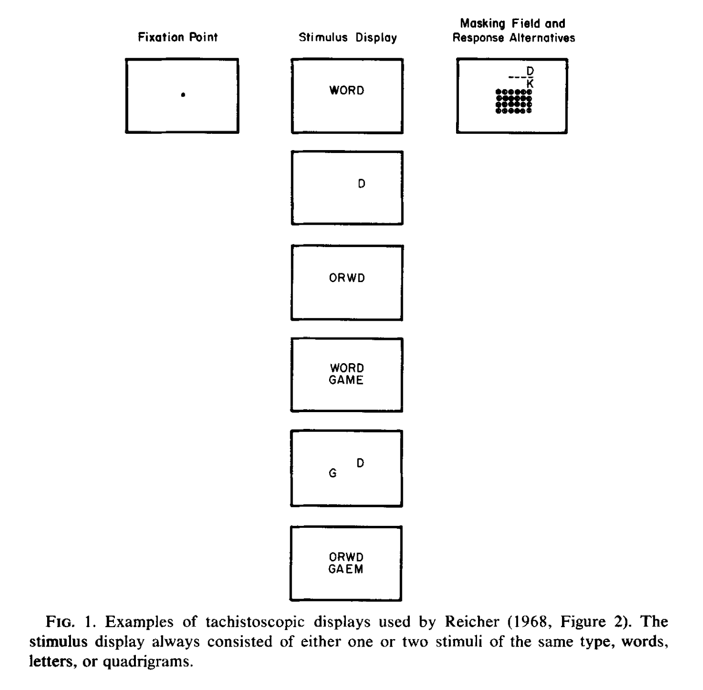

PSYC 2530: Language
Process theories and phenomena
Matthew J. C. Crump
Last compiled 05/03/22
Reminders from last class
There are no textbook chapter readings for this learning module.
Assigned empirical article is on blackboard
What is Language?
- Language is a big topic
- Much too big to cover in one mini-lecture
- Currently available as a download from google scholar…
Cognitive psychology of Language
- Cognition researchers are interested in understanding how language abilities work.
- Research has generated numerous theories about how language might work
- and, has discovered numerous phenomena that could be relevant to understanding how language works
General vs. Special processing Theories
A major debate has focused on general vs. special processing theories of language
General Process
Language abilities are mediated by general cognitive processes (perception, attention, learning, memory, motor control)
Special Process
Language abilities are mediated by specialized processes that are unique to language
Skinner and Chomsky
Psycholinguistists and the cognitive psychology of language emerged in the 1950s and 1960s as a part of the “cognitive revolution”
The transition from behaviorism to cognitivism is exemplified by dueling perspectives from B. F. Skinner and Noam Chomsky
Skinner’s Verbal Behavior
- 1957, Skinner publishes Verbal Behavior
- Applies his behaviorist approach to language
- Optimistic that behaviorist principles could be used to predict and control language behavior
Chomsky’s Book review
- In 1959, Noam Chomsky reviewed Skinner’s book
- Argued that language abilities are too complex to be described by functional analysis
- Argued that language results from inborn cognitive processes that need to be understood
A rift
- Many cognitive models of language invoke specialized processes
- General associative learning and memory explanations of language were “associated” with Behaviorism
- Since the 1950s, there has been several advances on both sides
Specialized processing theories
- Chomsky’s Transformational Grammar
- Information Processing stage models
Surface and deep structure
- Surface structure: that part of a sentence that can be segmented and labeled by conventional parsing
- Deep structure: an underlying form that contains information necessary for meaning
- Transformational grammar: the laws that govern the transformation of one structure into another
Innateness
- Chomsky’s controversial claim: Essential components of language are innate, and hard-wired (not learned).
- Particular grammars are not innate, but humans possess an innate schema for information processing specific for language
Lexical Abstraction Assumptions
- Stage theories assume feature abstraction
- Words come in many perceptual formats
- Words activate abstract concepts
- Perceptual details are lost across processing stages
Problems for stage theories
Assumptions of stage models can be tested with experimental data:
- Feed-forward processing
- loss of perceptual detail
Language Phenomena
- Word Superiority Effect
- Memory for speaker voices
Word Superiority Effect
- How does pattern recognition for words and letters work?
- Stage model suggests bottom-up order: basic visual features, then letters, then words
Word Superiority Effect
Question: Does letter recognition depend on context?
- Reicher, G. M. (1969). Perceptual recognition as a function of meaningfulness of stimulus material. Journal of Experimental Psychology, 81(2), 275–280. https://doi.org/10.1037/h0027768
Method and results

- Letter recognition is enhanced when the letter appears in the context of a word compared to alone or in other non-word contexts
Implications
- If word recognition depends on an earlier stage of letter recognition, why would letters be better recognized in the context of words than non-word contexts?
- Could word-level recognition occur before letter recognition?
- What stage of processing is performance in the task measuring?
Memory for Speaker Voice
- People can effortlessly hear words spoken by different people with different sounding voices
- Some stage models assume a speaker normalization stage that converts different voice sounds into standardized abstract features to activate each spoken word
Question
- What happens to memory for perceptual details of spoken words?
Speaker Normalization hypothesis:
People should not be able to remember details of what words sounded like, because the language processing system eliminates perceptual details during normalization
General memory perspective
People can encode and retrieve many details of their experiences…this should apply to how words sounded when they were encoded
Recognition memory for spoken words
- Palmeri, T. J., Goldinger, S. D., & Pisoni, D. B. (1993). Episodic encoding of voice attributes and recognition memory for spoken words. Journal of Experimental Psychology: Learning, Memory, and Cognition, 19(2), 309. https://doi.org/10.1037/0278-7393.19.2.309
Methods
- Participants listened to 300 spoken words
- Each word spoken twice
- Half spoken by same voice
- Half spoken by different voice
- Test was recognition memory for each word
Results
- Memory was better for words spoken in the same versus different speaker voice
Implications
- Findings are consistent with a role for general learning and memory processes in word processing
General vs. Special processing Theories
A major debate has focused on general vs. special processing theories of language
General Process
Language abilities are mediated by general cognitive processes (perception, attention, learning, memory, motor control)
Special Process
Language abilities are mediated by specialized processes that are unique to language
General learning and memory theories
- Computational models of semantic knowledge have been successfully built from general learning and memory principles
- Jamieson, R. K., Johns, B. T., Vokey, J. R., & Jones, M. N. (2022). Instance theory as a domain-general framework for cognitive psychology. Nature Reviews Psychology. https://doi.org/10/gpd7zt
- LSA, BEAGLE, HAL, ITS, Word2Vec
Modelling semantics
- Train model on a large corpus of text (millions of sentences) to approximate human experience
- Model extracts statistical associations about how words co-occur in context with other words
- Most recent language models (GPT-3) can perform remarkably well on language tasks
What’s next
Take the quiz and complete any additional assignments
Next week is the last module of the term on Judgment and Decision-making.